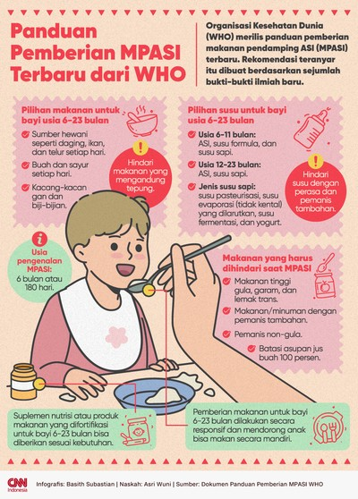

Panduan Dasar MPASI
🍼 Mulai Usia 6 Bulan
MPASI diberikan saat bayi berusia 6 bulan karena kebutuhan gizi sudah meningkat dan ASI saja tidak cukup.
🥦 Gunakan Bahan Alami
Sayur, buah, telur, ikan, tempe, dan daging segar lebih kaya nutrisi dan aman untuk bayi.
🍚 Tekstur Bertahap
Mulai dari makanan halus → lembek → padat sesuai usia dan kemampuan mengunyah bayi.
🚫 Hindari Gula & Garam
Ginjal bayi belum siap memproses gula dan garam berlebih. Hindari makanan instan.
Contoh Menu MPASI
Infografis MPASI
📊 Berikut ilustrasi tahapan pemberian MPASI berdasarkan usia bayi:

Gambar menunjukkan jenis makanan, tekstur, dan frekuensi MPASI dari usia 6 bulan hingga 12 bulan ke atas.